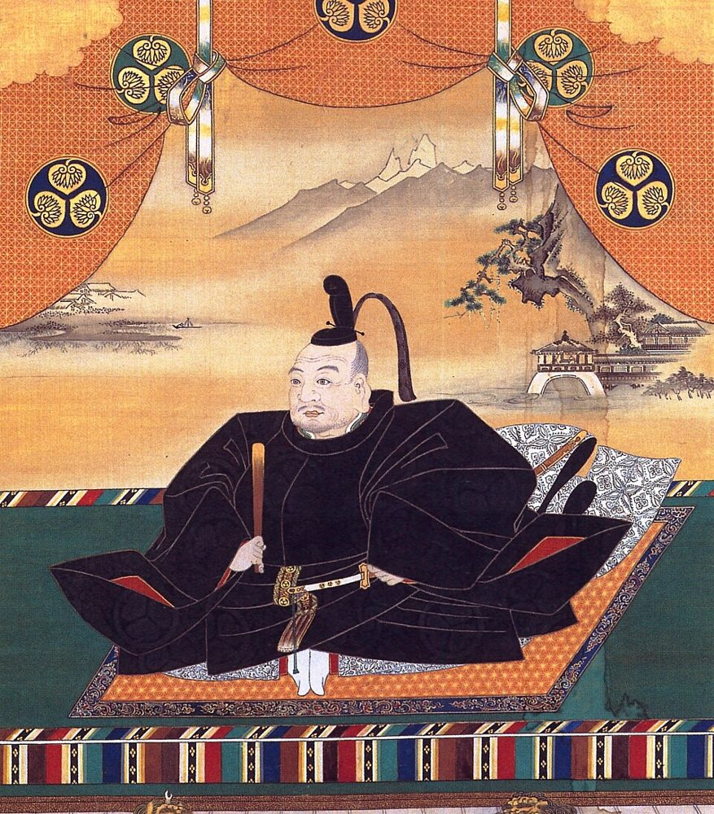
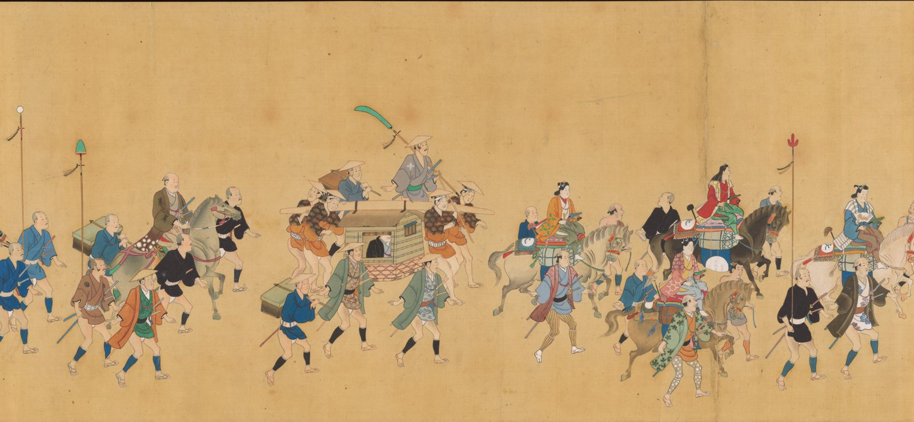
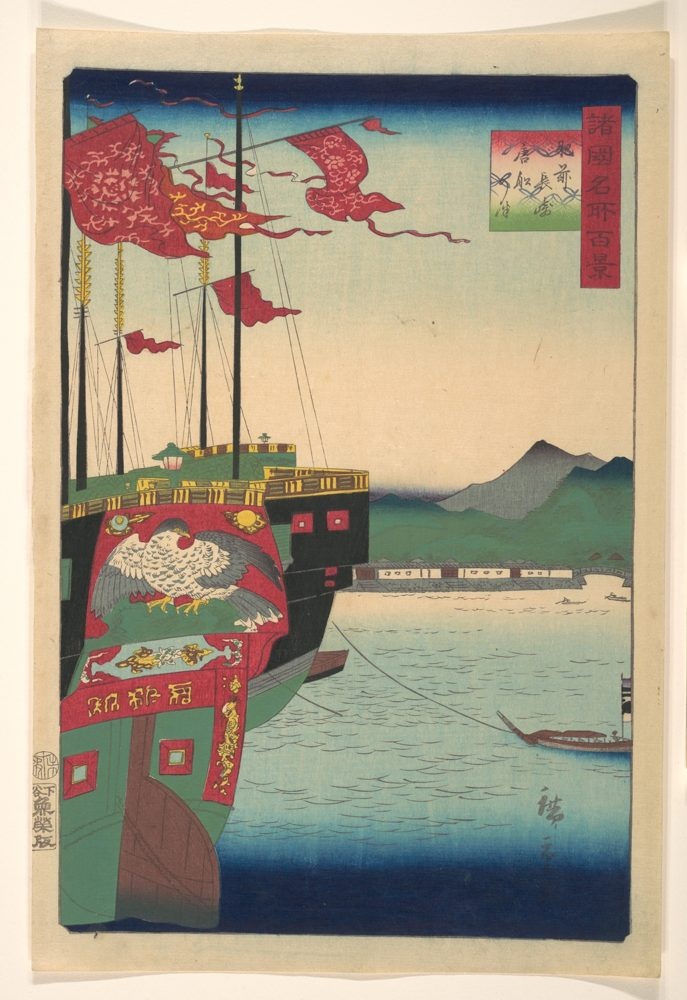
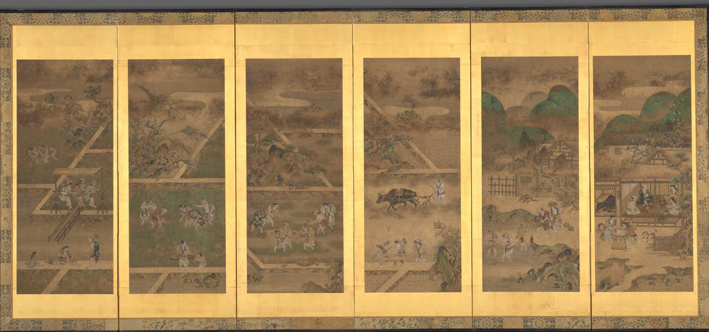
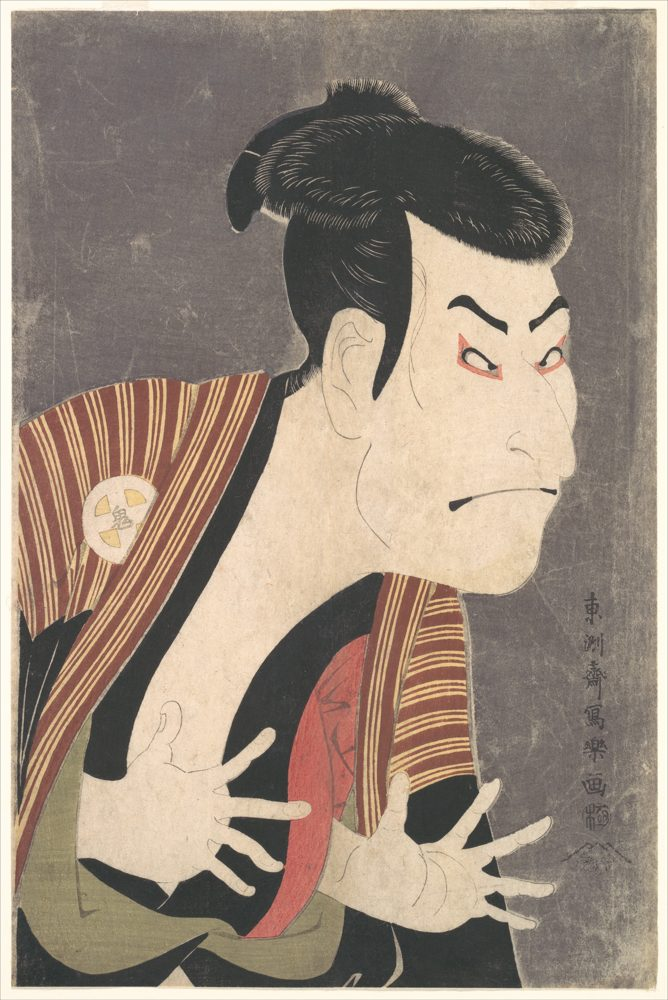
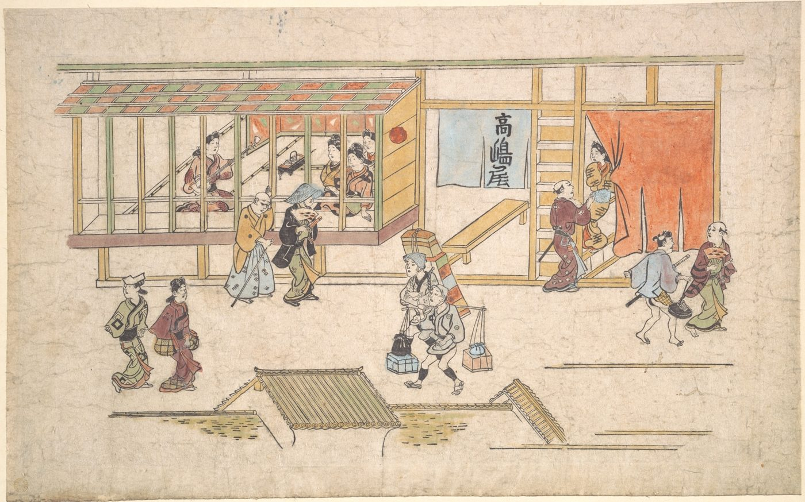
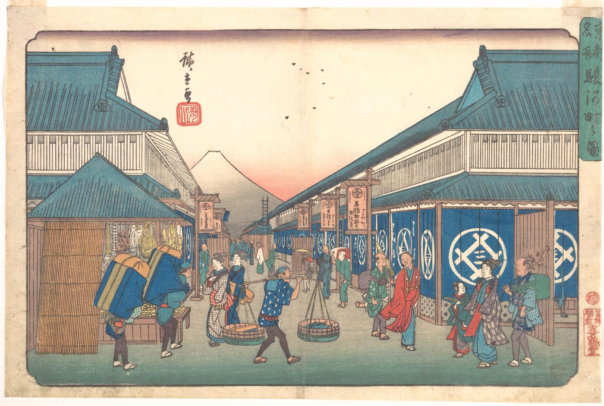
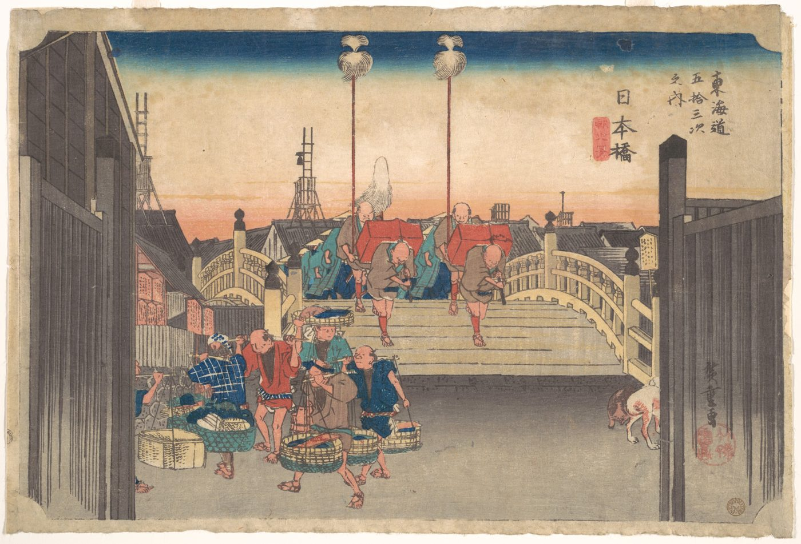

Unit 3 · Study guide
Tokugawa Japan 江戸時代
Peace, commerce, and city culture, 1603–1800
ContentsOverview
The chapter in one paragraph
The order the Tokugawa shoguns imposed was less a revolution than the consolidation of trends that began in the late 1500s: villages as corporate communities, warlord domains, the separation of samurai from commoners, and both the growth of commerce and restrictions on it. Family life kept older patterns too: eldest sons took all, and brides served their husbands' families. Yet two centuries of peace also made possible cottage industries that some historians call proto-industrialization, unprecedented urban growth, and a flowering of theater, fiction, poetry, and thought. p. 288
What did two hundred years of peace do to a society run by warriors?
Questions historians ask p. 288
The regime
- What set the Tokugawa apart from earlier military regimes?
- Did restricting foreign contact really isolate Japan?
Economy
- What did the political settlement mean for economic and population growth?
People
- What did samurai do with no battles to fight?
- How did townspeople and villagers make their presence felt?
Timeline at a glance
Dotted-underlined words are defined in Key terms: hover or tap for the definition, or open ✎ at any time. Page numbers refer to the textbook; † marks a fact from an outside source, listed under Sources. Pronunciations follow the textbook: sankin kōtai (SAHN-keen CO-tah-e), hatamoto (HAH-tah-moe-toe), tozama (TOE-zah-mah). A macron (ō, ū) means a long vowel.
The Tokugawa settlement
pp. 288–289
Land surveys and the separation of warriors from the land aimed to order society. To end feuds between brothers, the Tokugawa imposed primogeniture on the military class and confiscated domains split by succession fights. As a result a daimyo's competence mattered less than his office, and retainers' loyalty focused on the position, not the person.
The monarch's court lived "above the clouds" in Kyoto. Samurai topped the status order; no one was supposed to change status or residence, or marry across status lines.

The status order p. 289
Tap a group to see what the textbook says about it (Figure 3).
Core statuses
Ranked, top to bottom
Between statuses
Not ranked
Outcasts
Not ranked
Villages p. 289
Most villages had a dominant family, often descended from a warrior who had returned to the land, who monopolized the post of headman. Inequality structured village life: founders' descendants claimed the best fields and deference, and their wives shared that prestige.
Shared work
Families cooperated to level paddies, build dikes, manage irrigation, and transplant rice. Women did the transplanting, a carryover of medieval belief that made it a fertility rite.
Shared responsibility
As a corporation led by the headman, the village paid taxes collectively: yearly tribute in koku of rice plus fees, such as for using forests.
Who held the land p. 289
Largest domain, mostly in eastern and central Japan.
Hereditary Tokugawa retainers: advisers and first line of defense.
Ieyasu's former rivals or peers. Fewer, but the mightiest ruled near-nations.
The shogun's own smaller retainers and stipended housemen.
Ieyasu's descendants also counted among the daimyo: neither rich nor powerful, but prestigious.
How the shogunate governed
pp. 289–290
The shogunate built the most complex and coherent bureaucracies Japan had yet seen, later called the bakufu. Senior councilors made policy; their assistants handled the shogun's retainers; hatamoto served as magistrates.
- Samurai learned to wield a brush as well as a sword.
- They handled high finance and routine office work.
- Promotion followed hereditary rank: sons of guards stayed guards.
- Councilors were also personal vassals who attended the shogun's rites, lectures, and Nō dances.
- The shogun gave his old family name, Matsudaira, to key daimyo as a reminder that rulers were kin.
Keeping the daimyo in line p. 290
From 1615 the shogunate regulated the daimyo. They could not exceed a set number of guns per castle, repair castles freely, harbor criminals, plot together, or marry without permission. They had to fund the shogun's building projects and could be moved to another domain at his pleasure.
Most important was sankin kōtai. Step through it (Figure 4):
It countered the two dangers that had wrecked earlier regimes: retainers drifting away from the center (Kamakura) and rivals fighting at the center (Ashikaga). Its side effects were economic: stimulating trade, encouraging travel, and spreading culture. p. 290

National responsibilities p. 290
- Roads: rebuilt highways with post stations and checkpoints to keep guns out of Edo and female hostages in; no bridges over major rivers, for defense.
- Money: developed coastal shipping, took over precious-metal mines, minted copper, silver, and gold coins.
- Records: set an official handwriting style for documents ("a boon for historians").
- Religion: banned Christianity and enforced it through temple registration.
Controlling the outside world
pp. 290–291; Connections, pp. 267–269
In 1635 the shogunate forbade Japanese to travel abroad and banned foreign books. In 1639 it allowed only the Dutch to trade, at Nagasaki. This is often called sakoku, but the textbook stresses control, not isolation: contact ran through four managed "windows" (Figure 6).

Why restrict contact? pp. 267–269
- Christianity: warlords asked where an absolute god left the bond between lord and retainer. Ieyasu expelled missionaries in 1614; ties with Catholic countries were cut in 1624.
- Smuggling and piracy: the 1635 ban, and later a ban on building oceangoing ships, aimed at unregulated trade.
- Precious metals: import substitution kept silver and gold at home.
The annual Dutch ships still brought information, linked Japan to Southeast Asian trade routes, and opened the door to Western science and medicine. p. 269
The Ryukyus and the Ainu pp. 290–291
Ryukyu Islands
Invaded by Satsuma in 1609. Trade with China continued, but losing control of diplomacy and trade hurt islanders. Their intellectuals claimed moral parity with Japan and China by cultivating the Confucian sage's way, while accepting political subordination.
The Ainu
In 1669 a conflict between Ainu groups over game and fish became a war to rid Hokkaido of the Japanese. After its vicious suppression, each side built a distinct identity using the other's goods: eagle feathers and otter pelts for Japanese rulers; ironware, rice, and saké for the Ainu. Epidemics from traders hit Ainu hard.
Turning power into authority
p. 291
The shogunate lasted over 250 years not only through military dominance but because, like the sixteenth-century unifiers, Ieyasu and his heirs knew that ideology turns power into authority.
- Oda Nobunaga claimed to act for the realm, not private interest (kōgi). Hideyoshi promoted a cult to his own divinity.
- Ieyasu was deified after death as the "Buddha incarnate as the sun god of the east," enshrined at Nikkō to protect the shogunate and all people.
- Iemitsu, the third shogun, claimed the social order followed the way of heaven.
- Tsunayoshi, the fifth, tried to tame warriors: he codified mourning rites, lectured on the Confucian classics, and forbade killing animals, especially dogs used for target practice. His successor reversed the last.
- Yoshimune, the eighth, revived the martial arts. Reforms of 1787–1793 tried to rebalance brush and sword: for samurai, how to follow heaven's way was not obvious.
Farms and the commercial revolution
pp. 291–294
Farmers, merchants, artisans, and rulers quickly exploited the "peace dividend."

More land
Reclamation, often merchant-funded at a daimyo's urging, expanded arable land by 45%. Rivers were diked and channels dug. But building Edo and castle towns stripped forests, and by 1700 floods off bare mountains threatened fields.
Better farming
Rice varieties for local soils and climates; fast-ripening rice in the northeast; second crops (often wheat) farther south; New World corn, tobacco, and sweet potatoes. Traveling experts spread methods through books.
Cash crops & products
Cotton saved women hours of cloth-making. Daimyo hired teachers to show farmers how to harvest lacquer, make paper, and raise silkworms, and promoted regional specialties.
Quality, not scale
No one built big production units. Producers competed on quality and variety. Rapeseed-oil lamps let work go on after dark.
A virtuous cycle pp. 292–293
Population and the family p. 293
After nearly tripling in the seventeenth century, Japan's population stayed surprisingly flat, unlike China's and Korea's. Extended families broke into main and branch families, or landlords and tenants; most households became stem families. Possible reasons:
- Historians have supposed farmers used abortion and infanticide to avoid more children than they could afford.
- Men left home for months to work in towns, especially in winter.
- Women in central Japan married later, after gaining work experience.
- Disease: smallpox can cut male fertility by half; syphilis hit cities. Famines struck some regions harder than others.
Capital in the city, labor in the country pp. 293–294
Until the late 1700s, rural entrepreneurs rarely held much capital and leaned on urban merchants. Follow the money:
Domains later printed their own currency, designed like religious talismans to win users' trust. Some merchants supplied daimyo households with fine goods; others sold cotton cloth, lamp oil, and soy sauce to everyone.
Edo left waste disposal to landlords. As farmers planted where they once gathered green fertilizer, vegetable farmers near Edo carted off night soil, separating and heat-curing it until it became a valuable commodity. By the late 1700s, towns expected payment; middlemen raised prices until farmers petitioned the shogunate. Prices reflected status: men's waste fetched more than women's, samurai's more than commoners'. One village headman's house had a polished-wood toilet for samurai and an open pit for everyone else. p. 294
Cities and Genroku culture
pp. 294–296
Edo, a city built for defense pp. 294–295
The shogun's castle sat behind multiple stone walls and moats. Canals drained the swamp and moved goods; guardhouses forced travelers into sharp turns at bridges, and no road led straight to the castle. Vassal daimyo and the shogun's retainers formed a ring nearby; outside lords' compounds (over a thousand in all) had no moats or stone walls. The ruling class took the healthy high ground; commoners got the lowlands east and south.
Kyoto
Manufacturing center for luxury goods.
Osaka
Japan's chief market.
Edo
Swollen with daimyo and bureaucrats: a consumption center.
Cities fed commercial publishing, exhibitions, and salons where scholars, artists, and writers met patrons. Townspeople paid for hairdressing and entertainment and bought processed food and cloth: a consumption revolution.
The Genroku era (1688–1704) p. 295
Often called Japan's first professional author. Wrote of samurai love for boys but mostly of townspeople (Five Women Who Loved Love, The Life of an Amorous Man), and books on making and keeping money.
Made haiku a fine art and opened poetry to commoners. Passing an old battlefield, he wrote that summer grass is all that is left of warriors' dreams.
Original (1689): natsukusa ya / tsuwamonodomo ga / yume no ato
Wrote for the puppet theater: a young man loves a prostitute but cannot buy out her contract without ruining his family's business; torn between love and duty, the pair commit double suicide.
A go-between explains the "immutable rule" for dividing a merchant fortune of 1,000 kan of silver. Compare samurai primogeniture, where the eldest takes all.
- Marry a daughter into a poorer family; money matters most in matchmaking.
- A 30-kan dowry invested at 0.6% a month yields 180 momme, enough to keep the bride and three servants.
- Skip the licensed quarters (one night: 71 momme); when the master stays home, clerks and apprentices work harder.
- He mocks wives who dress like courtesans of matching rank.
The floating world pp. 295–296
Two pleasure zones defined Genroku: brothel districts and theaters, together the floating world. Entrepreneurs asked the shogunate to set up regulated prostitution districts, such as Edo's Yoshiwara. Its first customers were daimyo and samurai, soon eclipsed by big-spending merchants. Prostitutes, too, were ranked.
- Early 1600s: a prostitute dances on a Kyoto riverbank stage to draw customers.
- 1629: fights over her lead the shogunate to bar women from the stage. Boys replace them.
- Again disorder; only mature men may perform.
- Actors build up acting, song, dance, and spectacle; the highest praise goes to men who play women.
Kabuki staged townspeople's scandals but became best known for swashbuckling dramas set in the past, since discussing the shogunate or contemporary samurai was forbidden.


Intellectual trends
pp. 296–299
Denied fame in battle, some samurai turned to scholarship. Chinese philosophy was so prestigious that any learned man had to think in its categories. Women were not bound by this, but for that reason had little access to scholarship beyond Japanese poetry.
Confucians & their critics
Framed Tokugawa ideology in Neo-Confucian terms: social order mirrors natural order through one principle.
His student. Defined samurai life in peacetime: reflect on one's station, serve one's master loyally, devote oneself to duty.
Rejected an underlying principle; studied Confucius himself. Morality of benevolence and love that commoners could practice too.
Only pre-Confucian texts of the sage kings matter. Social order is man-made, and good: people need rules. Ieyasu was Japan's sage king.
Political economy
Daimyo should boost flat farm revenues by making goods to sell to other domains.
All relationships are measured exchanges of goods and services, a truth merchants grasp and samurai do not.
The sage kings were thieves who built governments to cheat farmers; samurai are parasites.
Merchant thought
Founded Shingaku after Genroku bankruptcies: just profit, devotion to business, meditation, thrift. No political agenda.
Merchant academy: merchants serve society by circulating goods through accurate calculation. Some teachers advised daimyo and shogun.
Japan's own past
Deciphered the Kojiki, Japan's oldest history. Japan alone is ruled by the sun goddess's descendants; its values, rooted in spontaneous feeling and the "true heart" (magokoro), surpass foreign logic and rules. Apolitical. Later linked to Kokugaku†.
Dutch studies
Lifts the ban on Western books that don't promote Christianity.
Saw a Dutch anatomy text name body parts Chinese texts lacked. In 1771 watched an outcast dissect a criminal's corpse, then coined Japanese terms for pancreas, nerve, and more, later exported to China. Spread ideas in salons from merchants to daimyo.
Forty-seven Akō retainers killed their dead lord's enemy. Sorai praised the deed but agreed with the shogunate that, having broken the law against private vendettas, they had to commit suicide. As long as people obey the law, he held, government should stay out of their lives.
Born Kudō Ayako into a lively samurai family; at nine she demanded lessons in classical poetry. From fifteen she served the Sendai lord's daughter for ten years. Her father's hopes for an office (and a good match for her) died with his patron in 1786. A first marriage to a decrepit man failed; in 1797 she married a high-ranking Sendai widower and spent her life in Sendai, likening the move to a journey to hell. In "Solitary Thoughts" she regretted being kept from Confucian learning, pitied samurai for not understanding money, and saw not harmony but competition everywhere: townspeople, she wrote, secretly delighted in warriors' poverty.
Maturation and decay
pp. 299–300
- 1Ieyasu left stores of gold bullion; his heirs spent freely.
- 21690s: the shogunate must devalue the currency.
- 3Creeping inflation erodes tax revenue and samurai stipends, while new consumer goods stimulate demand.
- 41720s: Shogun Yoshimune's reforms. A locust plague famine in 1732 ends them.
| Yoshimune's measure | Aim |
|---|---|
| Propped up rice prices | Help samurai paid in rice (townspeople complained) |
| "Voluntary" rice donation | Daimyo paid by domain size, in return for less time in Edo |
| Fixed tax rate | Stop revenues swinging with each harvest |
| New fields & cash crops | Opened land once kept for forage and fertilizer |
| Clothing rules by status · fewer palace women | Cut expenses |
| Petition box | Let commoners' suggestions reach him |
Popular culture, schooling, and travel
pp. 300–301
Unlike the ruling class, urban commoners generally enjoyed the consumption revolution. By 1750 Edo had well over 1 million people, perhaps the world's largest city.

Firsts in commerce
- The draper Echigoya introduced fixed prices for cash.
- The world's first commodity futures market opened in Osaka.
- Innkeepers for plaintiffs became proto-lawyers in a litigious society.
Advertising
- From 1715 kabuki actors advertised stores on stage.
- In 1774 an actor sold cosmetics under his own name in prints and plays.
- Best-selling authors were paid to praise toothpaste and pipes.
Schooling p. 300
Commerce made education possible and necessary. Priests, village officials, and rural entrepreneurs opened thousands of village schools; samurai and merchants had academies in towns. Texts taught moral lessons; those for girls stressed docility and restraint. Many learned simply when to plant and how to reckon profit.
The road and the pilgrim pp. 300–301
Roads built for daimyo began drawing commoners. Travel was banned for order's sake, but pilgrimages, family visits, and hot-spring cures were allowed with a passport giving name, description, and destination.
- Many went in confraternities; the favorite goal was Ise, with its shrine to the god of agriculture.
- Once-in-a-lifetime trips meant huge detours, plus sightseeing and theater in Edo and Osaka.
- Men went in their prime; women before marriage or once a daughter-in-law ran the house. Women hired guides around checkpoints to avoid invasive inspections.
- Pilgrims kept diaries, from expense lists to long descriptions.
- Every ~60 years, thousands joined okage mairi, leaving with nothing, living on alms, preyed on by bandits and pimps; many drifted into cities' floating population.

Hard times and rural uprisings
pp. 301–302
Resentment of status lines, injustice, and the underside of prosperity produced thousands of rural protests, organized collectively because villages were corporate.
The headman petitions up the chain of command; any official can stop it. Legend: Sakura Sōgorō appealed straight to the shogun and was crucified with his wife after seeing his sons executed. Historians doubt he existed, but he became Japan's most famous peasant martyr.
Few headmen risk their families. Farmers march together (ikki). In 1764 about 200,000 marched toward Edo against forced labor on the highways. Protesters wanted help, not revolution, but fear of protest limited new taxes.
The 1780s pp. 301–302
- 11783: Mt. Asama erupts; ash blocks sunlight all summer.
- 2Crop failures, worsened by bad policy, cause famine, repeated in 1787. Population reportedly falls by 920,000.
- 3Sufferers blame people, not nature: protests now target "evil merchants" hoarding grain.
- 4Five days of rioting in Edo: stores smashed, rice trampled, saké poured in the street.
- 5The famine exposes Tanuma Okitsugu's monopoly guilds, which had angered producers and daimyo. A second reform follows under Matsudaira Sadanobu.
Sadanobu's reforms
A staunch Neo-Confucian essayist and novelist. He set standards of bureaucratic conduct that lasted into modern times; his "Edo first" policy kept the city quiet for almost eighty years.
The darker side
He rounded up Edo's propertyless day laborers, held them on an island, and sent them to the Sado gold mine, where most died within two or three years. Officials condemned it; it was not repeated.
What did two hundred years of peace change?
pp. 302–303
Historians once assumed that because trade was restricted, Japan stagnated. The textbook disagrees.
Neo-Confucianism in three countries
p. 304; see also Unit 1 and Unit 2
principle: what makes all things one
matter: what makes things differ
mind-heart: links them; clouded by desire
Some sought knowledge through meditation, others through books and the external world. Zhu Xi used rites to regulate behavior: men and women live separately, wives rank above concubines, and ancestor rites train filial piety.
| China | Korea (Joseon) | Japan (Tokugawa) | |
|---|---|---|---|
| Main role | Zhu Xi required for the exams (Yuan–Qing) | Yangban weapon against Buddhism; ordered society | Ideology of rule: hierarchy as natural order; warriors recast as gentlemen |
| Debate | Some rejected Zhu Xi outright | Li vs. qi debates, later tied to factions and purges | Some studied the outer world; others praised desire and feeling; a merchant taught meditation |
| Daily life | Separation of sexes; rites | Walled women's quarters; widows never remarry; eldest son mourns at the tomb | Only the rich could separate quarters; sisters and daughters remarried for politics; Buddhist rites persisted; loyalty made an all-purpose standard |
Test yourself
Flashcards
Who's who
| Person | Why they matter |
|---|---|
| Tokugawa Ieyasu | Founded the shogunate; expelled missionaries (1614); deified at Nikkō |
| Iemitsu | 3rd shogun; the "way of heaven" |
| Tsunayoshi | 5th shogun; Confucian lectures, ban on killing animals |
| Yoshimune | 8th shogun; 1720s reforms; lifted ban on Western books |
| Tanuma Okitsugu | Senior councilor; monopoly guilds |
| Matsudaira Sadanobu | Reforms after the 1787 Edo riot |
| Ihara Saikaku | First professional author; townspeople and money |
| Matsuo Bashō | Haiku master |
| Chikamatsu Monzaemon | Puppet plays of love vs. duty |
| Hayashi Razan · Yamaga Sokō | Neo-Confucian ideology; samurai's peacetime duty |
| Itō Jinsai · Ogyū Sorai | Back to Confucius; back to the sage kings, order is man-made |
| Dazai Shundai · Kaiho Seiryō · Andō Shōeki | Political economy; exchange; samurai as parasites |
| Ishida Baigan | Shingaku: merchant ethics |
| Motoori Norinaga | Kojiki; Japan's "true heart" |
| Sugita Genpaku | Dutch anatomy; 1771 dissection |
| Tadano Makuzu | Samurai daughter; "Solitary Thoughts" |
| Sakura Sōgorō | Legendary peasant martyr |
Key dates
| 1603 † | Tokugawa shogunate founded |
| 1609 | Satsuma invades the Ryukyus |
| 1614 | Missionaries expelled |
| 1615 | First rules for daimyo |
| 1629 | Women banned from the stage |
| 1634 | Daimyo = over 10,000 koku |
| 1635 | Sankin kōtai formalized; overseas travel banned |
| 1639 · 1641 | Only the Dutch may trade; moved to Dejima |
| 1669 | Ainu war |
| 1688–1704 | Genroku era |
| 1690s | Currency devalued |
| 1703 | Akō vendetta |
| 1720 · 1724 | Western books allowed; Kaitokudō founded |
| 1732 | Locust famine ends Yoshimune's reforms |
| 1764 | ~200,000 farmers march on Edo |
| 1771 | Sugita Genpaku's dissection |
| 1783 · 1787 | Asama eruption; famine and Edo riot |
| 1787–93 | Sadanobu's reforms |
Discussion questions
Open each for points the chapter gives you to work with.
What set the Tokugawa apart from earlier military regimes?
- Primogeniture: loyalty to office, not person.
- Sankin kōtai and hostages answered the failures of Kamakura and Ashikaga.
- A real bureaucracy, and ideology (deified Ieyasu, way of heaven) turning power into authority.
Did restricting foreign contact isolate Japan?
- No: four managed windows (Nagasaki, Tsushima, Satsuma, Matsumae).
- Dutch ships brought news, trade routes, and Western science; Dutch studies from 1720.
- Yes, partly: no overseas travel, no oceangoing ships, the Japanese community at Hoi An vanished.
What did samurai do without battles to fight?
- Office work and finance, or idleness (42% of hatamoto without office in 1829).
- Scholarship: Hayashi, Yamaga, Sorai, and others.
- Pleasure quarters, culture, and debt as stipends lost value.
Why did the population stop growing after 1700, while China's and Korea's grew?
- Stem families on plots for one heir; suspected abortion and infanticide.
- Seasonal migration of men; later marriage for women.
- Smallpox, syphilis, and regional famines.
How did commoners make their presence felt?
- Money: merchants out-spent samurai; daimyo in debt to them.
- Culture: Genroku literature, kabuki, prints, publishing, travel.
- Protest: ikki marches, the 1764 march, the 1787 Edo riot.
Textbook questions: Saikaku, Makuzu
From the Document and Biography boxes (pp. 296–299): What should merchants do to prosper, and look for in a wife? Compare merchant and samurai inheritance. What opportunities and constraints did Makuzu face as a samurai daughter, and what did she think of her society?
Key terms
Click to expand
Ordered so each term only relies on terms above it. "Builds on" shows what to know first. Terms marked † use an outside source, listed under Sources.
- Shogun · shogunate
- Japan's supreme military ruler; the shogunate is his government. The Tokugawa family held the post from 1603 to 1868†. The monarch and his court lived "above the clouds" in Kyoto, honored but without power. p. 288; Britannica
- Samurai
- The hereditary warrior class, at the top of the official status order. Separated from the land, they lived in castle towns and Edo on stipends. pp. 288–289
- Retainer · stipend
- A retainer is a samurai serving a lord. He was paid either with a fief (land whose taxes he collected) or a stipend, a salary usually paid in rice from the lord's warehouses. pp. 289, 300Builds on: samurai
- Koku
- A measure of rice: 5.1 bushels, the amount needed to feed one man for a year. Taxes, domains, and incomes were all measured in koku. p. 289
- Domain
- The territory a lord governed, built up from villages. The shogun's own domain, mostly in eastern and central Japan, held about a quarter of the country's agricultural base. p. 289Builds on: koku
- Daimyo
- A lord ruling a domain. From 1634, only vassals with domains of more than 10,000 koku counted as daimyo. There were 250–280, each with a band of retainers to support and employ. p. 289Builds on: domain, koku, retainer
- Vassal daimyo fudai
- Hereditary retainers of the Tokugawa who governed domains, served as the shogun's chief advisers, and were his first line of defense. p. 289Builds on: daimyo
- Outside lords tozama · TOE-zah-mah
- Daimyo who had been Ieyasu's rivals or peers. Fewer than the vassal daimyo, but the mightiest ruled large domains that worked almost as nations. p. 289Builds on: daimyo
- Hatamoto HAH-tah-moe-toe
- "Beneath the banner": the shogun's own retainers whose fiefs were too small for daimyo status. They staffed his administration. Below them were thousands of housemen paid stipends. pp. 289–290Builds on: retainer, daimyo
- Primogeniture
- Inheritance by the eldest son alone. The Tokugawa required it of the military class and confiscated domains torn apart by succession disputes, so loyalty attached to the office, not the person. p. 288
- Status order
- The official social ranking: samurai at the top, then commoners ranked by their contribution to society (farmers, artisans, merchants). In principle no one changed status or residence or married across lines; in reality boundaries were fluid. pp. 288–289Builds on: samurai
- Outcasts hinin · kawata
- Those below the core statuses: blind female entertainers, beggars, prostitutes, actors, "non-humans" (hinin), and "polluted ones" (kawata). The exclusive right to work animal skins made some outcasts wealthy. p. 289Builds on: status order
- Headman · council of elders
- The village leader, usually from a dominant family descended from a warrior who returned to the land. A council of landholding elders advised him. The headman represented the village to samurai officials. pp. 289, 301
- Corporate village
- The village acted as a collective body under its headman: it divided up fields, regulated forests and wasteland, and was jointly responsible for taxes in rice. Contrast China's open villages. p. 289; Unit 2, p. 283Builds on: headman, koku
- Stem family
- Grandparents, parents, and children living off a plot just big enough for one heir. It replaced the extended families of earlier times; adoption made it easy to find an heir. p. 293
- Ainu
- Indigenous people of Hokkaido. Trade with them was monopolized by the Matsumae family. After a 1669 war to drive out the Japanese was crushed, they grew dependent on that trade; many became contract laborers in fisheries. p. 291
- Ryukyu Islands
- An independent island kingdom with tributary ties to both China and Japan. Satsuma invaded in 1609; the king survived but lost control of diplomacy and trade. p. 290
- Bakufu
- "Tent government": the name later given to the shogun's elaborate bureaucracy. p. 289Builds on: shogun
- Senior councilors
- Four or five vassal daimyo, each worth at least 30,000 koku, rotating monthly. They decided policy and personnel and supervised the daimyo. p. 289Builds on: fudai, bakufu
- Magistrates
- Hatamoto officials in charge of finances, cities, and temples and shrines. Finance magistrates oversaw the district officials who collected village taxes. pp. 289–290Builds on: hatamoto
- Great interior ōoku
- The shogun's women's quarters, a female bureaucracy serving him, his wife, and his mother: yearly ceremonies and gift exchanges with the Kyoto court and daimyo. p. 290
- Sankin kōtai alternate attendance
- Formalized in 1635: each daimyo spent half his time in his domain and half in Edo, and his wife and heir lived in Edo as hostages. Meant to keep daimyo loyal and effective, it also boosted trade, travel, and cultural exchange. p. 290Builds on: daimyo
- Temple registration
- A nationwide system set up to enforce the ban on Christianity. p. 290
- Dejima
- An artificial island in Nagasaki bay, built for the Portuguese. From 1641 the Dutch, the only Westerners allowed to trade, were confined there. p. 269
- Sakoku †
- "National isolation": the name for the directives of the early 1600s that restricted foreign contact and banned Christianity. The textbook avoids the word and stresses that Japan was not sealed off. Britannica; pp. 290, 303Builds on: Dejima
- Kōgi
- "Public administration": Oda Nobunaga's claim that running his domain served the realm, not his private, selfish interests. p. 291
- Way of heaven tendō
- Iemitsu's claim that the shogun's social order followed the way of heaven: natural, unchanging, eternal, and hierarchical. The ruler shows the Buddha's benevolence, warriors keep peace, commoners obey. p. 291
- Cash crops
- Crops grown for sale rather than for the family to eat, such as cotton. p. 292
- Cottage industry · proto-industrialization
- Manufacturing done by families in their homes, often with merchant capital: dyeing, weaving, paper, lacquer, silk. Some historians call this proto-industrialization, an early stage before factories. pp. 288, 292–293Builds on: cash crops
- Import substitution
- Producing at home goods once bought abroad, to keep scarce precious metals in Japan: domestic silk replaced Chinese silk by the 1730s, sugar by the 1830s. pp. 268, 292
- Consumption revolution
- Rising demand for a greater variety of goods, from carved transoms to saké and tobacco, as townspeople bought finished products and services they once made themselves. p. 295
- Letters of credit
- Daimyo sold tax rice to Osaka merchants, who advanced money and letters of credit redeemable at their Edo branches: Japan's first paper money. pp. 293–294Builds on: sankin kōtai
- Night soil
- Human waste, processed and used as fertilizer. By the late 1700s farmers had to pay townspeople for it, at prices that tracked status. p. 294
- Devaluation · inflation
- Devaluation: reducing the precious metal in coins. Inflation: rising prices. The 1690s devaluation fed creeping inflation that shrank tax revenues and samurai stipends. p. 300Builds on: stipend
- Guilds · monopolies
- Under Tanuma Okitsugu, merchants were pushed to buy shares in guilds granted a monopoly over one item, paying "thank you" money to the shogun. Those shut out resented them. p. 302
- Genroku era
- 1688–1704: the peak of urban prosperity and of townsman culture in art and literature. p. 295
- Floating world ukiyo
- The pleasure zones of brothel districts and theaters, on the edges of respectable society, celebrated in woodblock prints of courtesans and actors. p. 295Builds on: Genroku era
- Yoshiwara
- Edo's licensed prostitution district, surrounded by a moat and walls; guards noted the men who entered and kept women from leaving. p. 295Builds on: floating world
- Kabuki
- Theater that began on a Kyoto riverbank. Women were banned from the stage in 1629, then boys; mature men developed acting, song, dance, and spectacular sets. Plays could not discuss the shogunate or current samurai life. pp. 295–296
- Puppet theater
- The theater for which Chikamatsu wrote scripts exploring the clash between social obligation and human feeling. p. 295
- Haiku
- A seventeen-syllable verse form. Matsuo Bashō made it a fine art and brought poetry to commoners. p. 295
- Confraternity
- A society created for one purpose; many raised money to send a few members on pilgrimage each year. p. 300
- Okage mairi
- A mass thanksgiving pilgrimage to the inner shrine of the sun goddess at Ise, at roughly sixty-year intervals. Thousands left without permission; many never went home. p. 301Builds on: confraternity
- Li principle
- The invisible principle or pattern that informs everything and links all things; it differs in different objects. p. 304
- Qi matter · physical force
- What makes things physical and distinct. For Zhu Xi neither li nor qi could exist without the other. p. 304Builds on: li
- Xin mind · heart
- What links li and qi in a person. Pure in its underlying form, clouded by desires and feelings in its physical form, so these must be regulated. p. 304Builds on: li, qi
- Neo-Confucianism
- A philosophy, systematized by Zhu Xi (1130–1200), seeking one explanation for the universe and human nature in li and qi, and regulating life through rites and filial piety. In Japan it served as the ideology of rule. p. 304Builds on: li, qi, xin
- Akō vendetta Chūshingura
- In 1703, forty-seven retainers from Akō killed their dead lord's enemy, saying honor left no choice. They were ordered to commit suicide for breaking the ban on private vendettas. Dramatized as The Treasury of Loyal Retainers. p. 298Builds on: retainer
- Shingaku
- "Study of the heart," founded by Ishida Baigan: merchants deserve a just profit, as samurai deserve stipends, and should seek moral perfection through meditation, diligence, thrift, and fortitude. p. 298Builds on: stipend, xin
- Kokugaku † National Learning
- A movement studying Japan's classical texts and seeking to remove foreign influences such as Buddhism and Confucianism. Motoori Norinaga was a leading figure. The textbook describes him without naming the movement. p. 298; Britannica
- Dutch studies
- Study of Western learning through Dutch books, allowed after 1720 if they did not promote Christianity. Focused on practical matters: anatomy, astronomy, geography, military science. p. 298Builds on: Dejima
- Ikki
- What 18th-century farmers called their collective protests, marching together to state grievances. The word recalled the leagues of the 1500s. p. 301Builds on: corporate village
Sources and further reading
- Main text: Patricia Buckley Ebrey & Anne Walthall, Modern East Asia from 1600: A Cultural, Social, and Political History, 3rd ed. (Cengage, 2013), Ch. 17, pp. 288–304; Connections: "Europe Enters the Scene," pp. 265–269.
- Primary sources the chapter excerpts: Ihara Saikaku, The Scheming World, trans. Masanori Takatsuka & David C. Stubbs (Tuttle, 1965); Bettina Gramlich-Oka, Thinking Like a Man: Tadano Makuzu (1763–1825) (Brill, 2006); Ryusaku Tsunoda et al., eds., Sources of Japanese Tradition (Columbia, 1959), for Yamaga Sokō; Matsuo Bashō, Oku no hosomichi (The Narrow Road to the Deep North).
- Outside facts (marked †): Encyclopaedia Britannica, "Tokugawa Ieyasu" (1603 founding); "Battle of Sekigahara" (1600); "Sakoku"; "Kokugaku".
- Explore further: the Met's open-access Edo-period collection; Japan: Places, Images, Times & Transformations (University of Pittsburgh), a teaching site with a glossary of Tokugawa terms.
Image credits
- Kanō Tan'yū, portrait of Tokugawa Ieyasu, early Edo period, Osaka Castle Museum: public domain, Wikimedia Commons.
- Hishikawa school, Daimyo Procession to Edo, c. 1700 (detail): CC0, Metropolitan Museum of Art.
- Utagawa Hiroshige II, Dutch and Chinese Ships in the Harbor at Nagasaki in Hizen Province, 1859: CC0, Met.
- Farmers' Lives in the Twelve Months, late 17th–early 18th c. (one screen of a pair): CC0, Met.
- Tōshūsai Sharaku, Kabuki Actor Ōtani Oniji III as Yakko Edobei, 1794: CC0, Met.
- Hishikawa Moronobu, Scene in the Yoshiwara, c. 1680: CC0, Met.
- Utagawa Hiroshige, Suruga Street, c. 1836: CC0, Met.
- Utagawa Hiroshige, Stations One: Morning View of Nihonbashi, c. 1833–34: CC0, Met.
- Contact map: drawn for this course on Natural Earth 1:10m land data (public domain).

Image titles and dates come from each image's catalog record, not from the textbook.